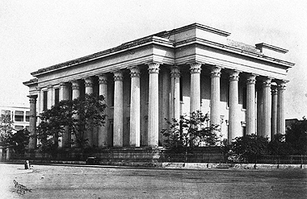

MARBLE PALACE
Situated close to the Tagore residence in the northern part of the city, the Marble Palace which houses an age-old art gallery owned by the Mallick family of Chorbagan. Built in 1835 by Rajendra Mallick, this art gallery personifies the earliest effort at collecting by a private individual. European art objects, oil paintings, both original and copies, and a varied assortment of Chinese and Japanese porcelain are amongst its prized collections. The paintings include works by Rembrandt, Reynolds, Rubens and Van Goyen besides many others. There is also a small zoo of birds and non-carnivorous animals. The Marble Palace has confirmed its place in the annals of history despite the colossal presence of the Indian Museum.